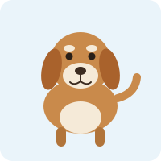
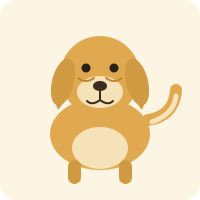
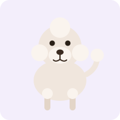

Beagle
Size: Small to medium, roughly 10-11 kg and 33-41 cm tall.
Personality: Curious, cheerful and very scent-driven.
Everyday care: Needs a daily walk with plenty of sniffing time, plus regular ear checks.
Welcome to our park! Meet three friendly breeds, then adopt your own virtual dog to feed, play with and watch grow.
Each breed below has its own illustration and short care notes on size, personality and everyday care.

Size: Small to medium, roughly 10-11 kg and 33-41 cm tall.
Personality: Curious, cheerful and very scent-driven.
Everyday care: Needs a daily walk with plenty of sniffing time, plus regular ear checks.

Size: Large, roughly 25-34 kg and 51-61 cm tall.
Personality: Gentle, patient and eager to please.
Everyday care: Needs long active walks and weekly brushing of its thick coat.

Size: Varies by type; a standard Poodle is roughly 20-32 kg and over 38 cm tall.
Personality: Clever, lively and quick to learn new tricks.
Everyday care: Needs mental games as well as walks, and a clip every few weeks.